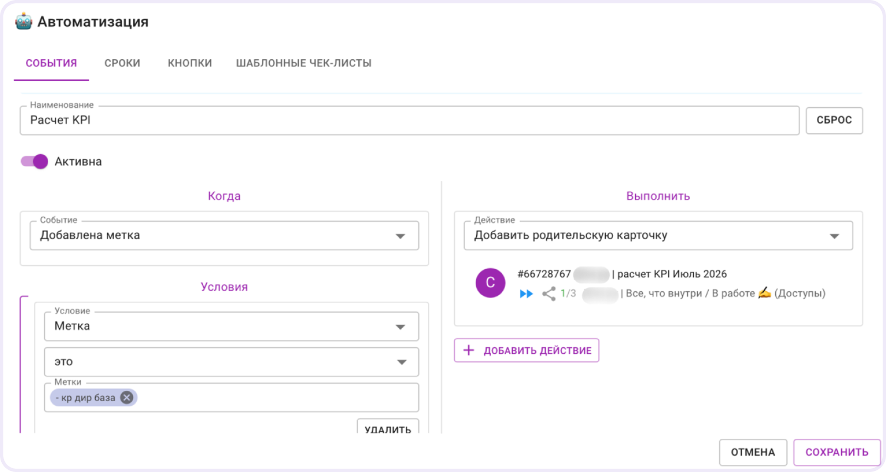

Премии
04 / 04
Метка KPI собирает факты за месяц
Проверяющий ставит метку, когда одна и та же ошибка повторяется.
Дальше задача сама встает в общую карточку проекта

Директору не нужно запрашивать отчеты: к концу месяца
факты уже собраны